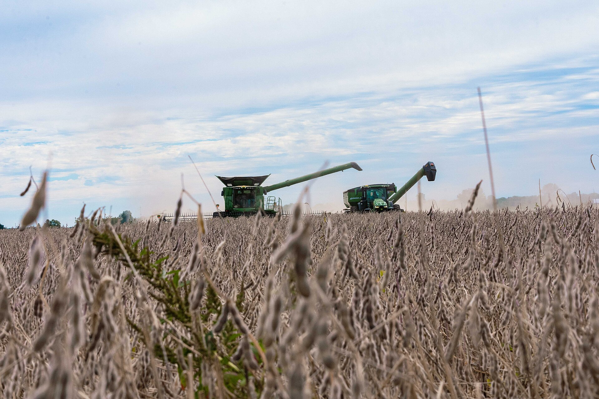
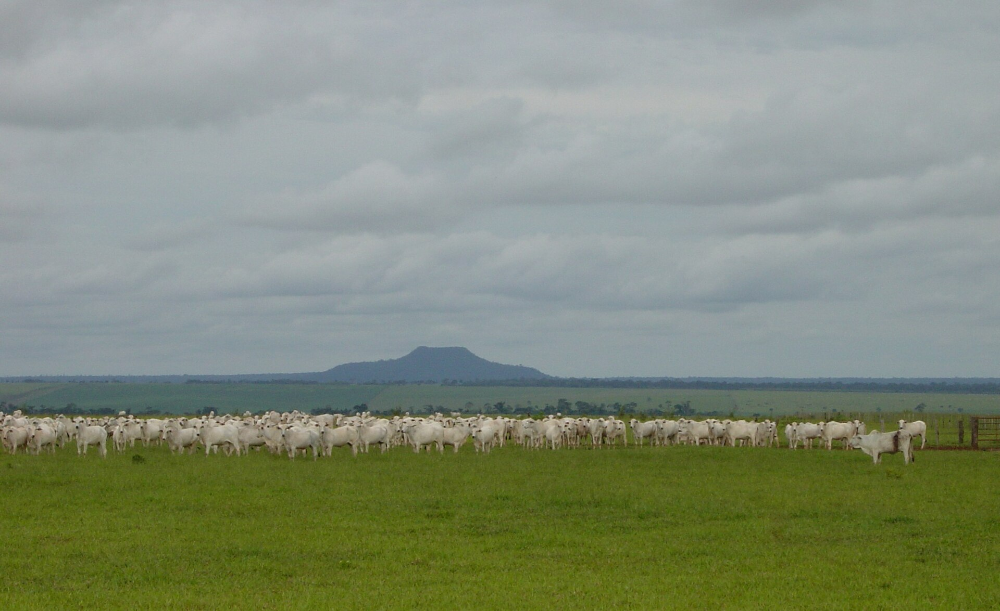

E a sua carteira?
Um bom patrimônio não depende de um setor só.
Quer saber quanto do seu depende do agro? Acesse o link na BIO e vamos conversar.

E o Brasil precisa prestar atenção.
Desde 1º de maio de 2026, a China zerou a tarifa de importação para 53 países africanos. Café, cacau, castanhas, frutas e carnes ficaram mais baratos para o comprador chinês.
países africanos vendendo para a China sem imposto de importação.
Medida válida até 30 de abril de 2028. Fonte: Comissão Tarifária do Conselho de Estado da China.
Antes mesmo da ampliação, as compras chinesas na África já aceleravam no 1º trimestre de 2026.
Variação sobre o 1º trimestre de 2025. Fonte: alfândega chinesa.
Pequim quer depender menos de comida importada. O plano 2026–2030 prevê mais produção própria e menos farelo de soja na ração.
Analistas estimam que a China pode importar até 25% menos soja até 2030.
Quanto a China pode comprar de fora em 2030, comparado com hoje.
Estimativa de analistas de mercado. As projeções variam conforme a fonte.
Fonte: Ministério da Agricultura (MAPA), balança do agronegócio 2025.
Fontes: Cepea/CNA (PIB do agronegócio) e MAPA (exportações).

Quando o agro perde fôlego, o efeito não fica só no campo. Ele chega ao dólar, à renda, ao crédito e à bolsa.
O Brasil segue líder e a produção africana ainda é pequena. O risco é de longo prazo.
Por isso mesmo, dá tempo de diversificar com calma: por setor, por indexador e por geografia.
Um bom patrimônio não depende de um setor só.
Quer saber quanto do seu depende do agro? Acesse o link na BIO e vamos conversar.